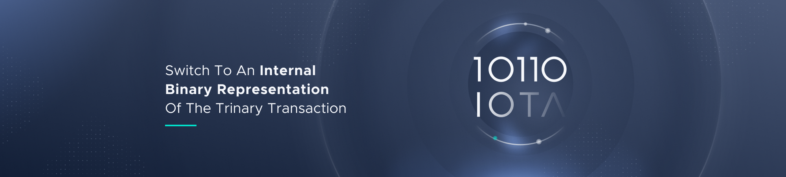

What is Chrysalis
However, apart from Coordicide, the objective of the IOTA Foundation is to fully optimise the IOTA mainnet pre-Coordicide and offer an enterprise-ready solution to our ecosystem. We have therefore planned for an intermediate update called Chrysalis. This plan was first announced alongside our roadmap, but the scope has since been expanded. This post provides further information on what this upgrade to the IOTA Mainnet entails.
A chrysalis is “the form a caterpillar takes before it emerges from its cocoon as a fully-formed moth or butterfly”. In the context of IOTA, Chrysalis is the mainnet’s intermediate stage before coordicide is complete. To be clear, Chrysalis is separate to the coordicide efforts, and is aimed at improving usability of the current IOTA mainnet prior to coordicide.

Why is this process of adopting major protocol improvements relatively unique to IOTA among permissionless DLTs? The simple answer is the absence of miners. In most permissionless DLTs, the miners’ economic incentives conflict with those of the users of the network. Better throughput and lower latencies can disrupt the fee market miners rely on, and therefore agreeing to upgrade the network may affect their own profitability.
In IOTA, the validators and users are one and the same. There is no stubborn clash of incentives, meaning a much smoother path to network improvements. We will demonstrate this with the upcoming incremental upgrades to the network under Chrysalis.
So what are these incremental upgrades?
White-flag approach
 White-flag approach for calculating balances. A simpler, conflict-ignoring approach (valid for the pre-coordicide era) that improves speed and efficiency of tip selection, eliminates certain attacks, and significantly reduces the need for reattachments.
White-flag approach for calculating balances. A simpler, conflict-ignoring approach (valid for the pre-coordicide era) that improves speed and efficiency of tip selection, eliminates certain attacks, and significantly reduces the need for reattachments.
New milestone selection algorithm
 New milestone selection algorithm for the coordinator, focused on allowing the network to support as much CTPS as possible, with higher computational efficiency.
New milestone selection algorithm for the coordinator, focused on allowing the network to support as much CTPS as possible, with higher computational efficiency.
URTS tip selection
 New URTS tip selection in node software. Significantly faster and more efficient than the current approach.
New URTS tip selection in node software. Significantly faster and more efficient than the current approach.
Support for a new signature scheme
 Support for a new signature scheme in parallel to WOTS. The network will therefore allow for both quantum resistant one-time signatures and a more commonly used signature scheme allowing re-use of private keys. This will dramatically reduce transaction size, and consequently allow a significant increase in TPS. By introducing a new signature scheme we will also allow for reusable addresses, a very popular request from the community.
Support for a new signature scheme in parallel to WOTS. The network will therefore allow for both quantum resistant one-time signatures and a more commonly used signature scheme allowing re-use of private keys. This will dramatically reduce transaction size, and consequently allow a significant increase in TPS. By introducing a new signature scheme we will also allow for reusable addresses, a very popular request from the community.
Atomic transactions
 Atomic transactions. Move from the current Bundle construct and use simpler atomic transactions instead. This will reduce network overhead, reduce signature verification burden, improve spam protection and congestion control, and reduce length of Merkle proofs (for future sharding). In addition, it will reduce implementation efforts and increase maintainability of our core node software.
Atomic transactions. Move from the current Bundle construct and use simpler atomic transactions instead. This will reduce network overhead, reduce signature verification burden, improve spam protection and congestion control, and reduce length of Merkle proofs (for future sharding). In addition, it will reduce implementation efforts and increase maintainability of our core node software.
Switch to UTXO Model
Switch to UTXO model from the current balance model. Every coin on an address is then uniquely identifiable and every spend names the exact coins that it wants to move. This allows for faster and more exact conflict handling and improves resilience and security of the protocol. In addition, switching to UTXO will make colored coins on IOTA possible. Combined with Mana (Coordicide) in the near future, this makes for a very attractive tokenization model and will further boost the adoption of the IOTA token.
Internal Binary Representation
 Switch to an internal binary representation of the trinary transaction. This allows us to work on binary data, for validation, IO and other processing without the need to have many binary-ternary conversions as in the current node software. The bundle hash can still be represented as 243 trits, such that the signing scheme stays the same and no transition of funds is necessary. This should lead to further improvements in performance.